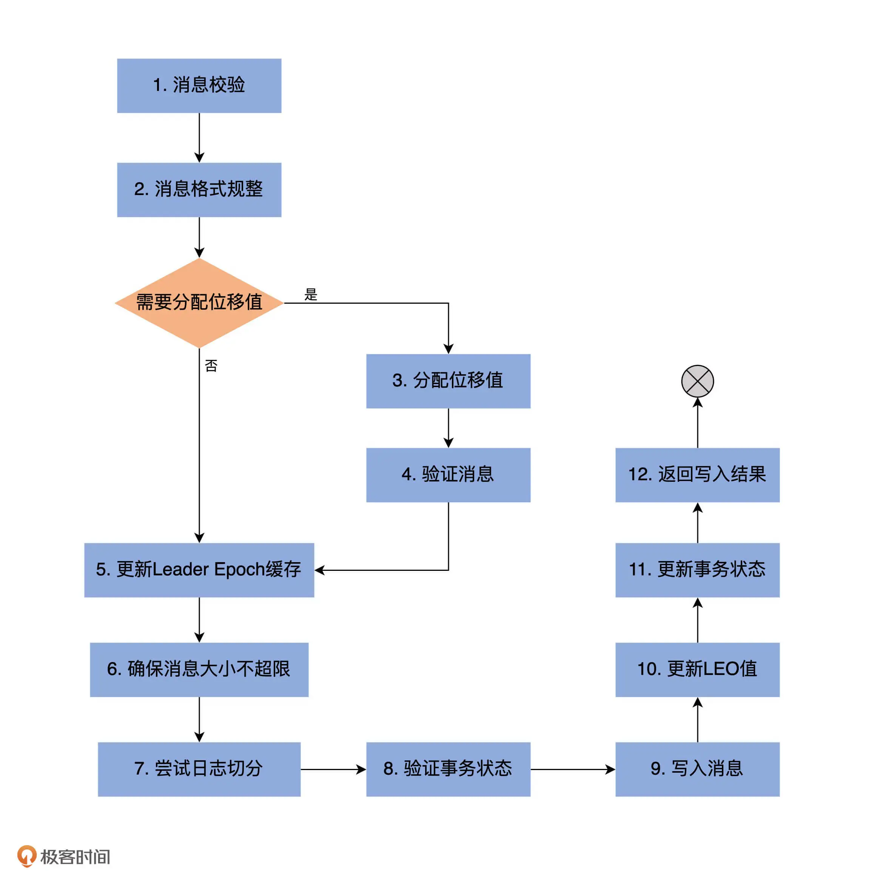
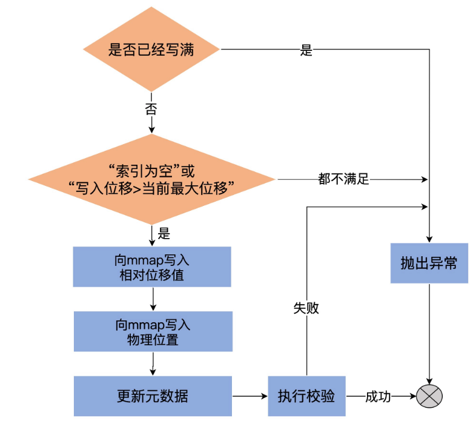

日志模块¶
1 日志段¶
日志结构¶
日志 Log ->{ 日志段 Log Segement ->{ 消息日志文件 00000.log； 位移索引文件 00000.index； 时间戳索引文件 00000.timeindex； 已终止事务索引文件 00000.txnindex } ... }
文件名为日志段的起始位移值，即该日志段所存第一条消息的位移值。
每一个分区对应一个日志 Log，对应物理磁盘上的一个子目录。
大面积日志段同时切分造成磁盘IO瞬间打满，可用 log.roll.jitter.ms 值大于 0 设置切分的扰动值
日志段源码：scala/kafka/log/LogSegment.scala
其中包含三个对象：
- LogSegment class;
- LogSegment object;
- LogFlushStats object。
Scala同名的class（伴生类）和object（单例对象）叫伴生（Companion），类似于Java中的两个LogSegment和LogSegmentUtils类。
每个日志段由两个核心构成：日志（实际的消息）和 索引（逻辑位移与物理文件中位置的映射）。每个日志段都有一个起始位移值 Base_Offest。小于等于段内位移，大于之前的所有位移。
indexIntervalBytest 是Broker的 log.index.interval.bytes 参数，控制日志段对象新增索引项的频率。默认写入4KB的消息增加一个索引项。
append 方法（写入）¶
入参： * 最大位移， * 最大时间戳， * 最大时间戳对应消息位移， * 消息集合
1、判断日志段是否为空 log.sizeInBytes，空的话需要记录写入消息集合的最大时间戳，并将其作为后面新增日志段倒计时的依据。
2、ensureOffsetInrange 保证输入 最大位移 是合法的，即 largestOffest - baseOffset 介于 [0, Int.MAXVALUE]。越界会抛出异常，需要升级kafka，通常是由一个已知bug导致的。
3、调用 FileRecords 的 append 方法，执行真正的写入。（将内存中的消息写入操作系统的页缓存中）。
4、更新日志段的 最大时间戳 和 最大时间戳对应位移值，可以用于消息按时间清理。
5、更新索引和写入字节数。
read 方法 （读取）¶
入参： * startOffest 读取日志段中大于等于startOffest位移的消息 * maxSize 读取消息集合的最大bytes * maxPosition 能读到的最大文件位置 * minOneMessage 如果消息集合大于maxSize，可以只返回第一条
1、根据起始位移找到对应的物理文件位置。
2、计算可读取的总字节数 min(maxSize, maxPosition - startPosition)
3、调用 FileRecords 的 slice 方法，读出指定大小的消息集合。
recover 方法 （恢复日志段）¶
Broker启动时加载磁盘上所有日志段信息到内存中，创建相应的LogSegment对象。从log中重建index，修剪掉log和index结尾非法的字节，用batch导入？不是完整的batch删掉？。
-
清空所有索引文件
-
遍历日志段中所有消息集合（batches）
- 校验消息集合 （集合中的消息符合kafka定义的二进制格式；最后一条消息位移不能越界。）
- 保存最大时间戳和所属消息位移
- 更新索引
- 更新消息总字节数
- 更新事务Producer状态和Leader Epoch缓存
-
执行消息日志和索引文件的截断
truncateTo方法 （截断）¶
TODO：
2 日志¶
kafka核中核，管理日志段
日志源码：scala/kafka/log/UnifiedLog.scala
包含对象：
- LogAppendInfo
- C：保存一组带写入消息的元数据，第一条消息的位移，最后一条消息的位移等等
- O：伴生类的工厂类
- UnifiedLog
- C：Log的核中核
- O：工厂方法，常量和辅助方法
- RollParams
- C：定义用于控制日志段是否切分（Roll）的数据结构
- O：工厂方法
- LogMeticNames：Log对象监控指标
- LogOffestSnapshot：封装分区所有位移元数据的容器类
- LogReadInfo：封装读取日志返回的数据及其元数据
- CompletedTxn：记录已完成事务的元数据，主要用于构建事务索引
UnifiedLog Class & Object¶
UnifiedLog Object¶
文件后缀
.snapshot 为幂等型或事务型 Producer 所做的快照文件。
.deleted 删除是异步的，.log改为deleted再删除。
文件名固定 20 位长度，为 offset 前面补0。
UnifiedLog Class¶
localLog.dir？：主题分区路径
logStartOffest：日志的当前最早位移
LeaderEpochFileCache？详细的epoch机制？00_kafka基本概念#Leader Epoch
Log 类初始化逻辑（旧版）¶
新版？
- 创建分区日志路径
- 初始化 Leader Epoch Cache
- 创建 Leader Epoch 检查点文件
- 生成 Leader Epoch Cache 对象
- 加载所有日志段对象
- 执行 removeTempFilesAndCollectSwapFiles 逻辑
- 源码开始清空已有日志段集合，并重新加载日志段文件
- 处理第 1 不返回有效的 .swap 文件集合（用新的合并过的swap文件替代老的日字段）
- recoverLog 操作
- 更新 nextOffsetMetadata （下一条消息插入位移）和 logStartOffset（对外可见的最早位移）
- 更新 Leader Epoch Cache，清除无效数据
Log 常见操作¶
1. 高水位管理¶
高水位值的初始值是 Log Start Offset 值
更新：¶
- updateHighWatermark方法：主要用在 Follower 副本获取消息后更新高水位；
- maybeIncrementHighWatermark方法：主要用在 Leader 副本 HW 更新，只有在新HW比老的高，或者相等新HW在新的日志段，则更新HW。
2. 日志段管理¶
private val segments: ConcurrentNavigableMap[java.lang.Long, LogSegment] = new ConcurrentSkipListMap[java.lang.Long, LogSegment]
日志是日志段的容器
ConcurrentSkipListMap
- 线程安全
- 将日志段的起始位移值作为 key，是有序的
删除日志段¶
根据留存策略不同有3个方法：
- deleteRetentionMsBreachedSegments
- deleteRetentionSizeBreachedSegments
- deletetLogStartOffsetBreachedSegments
private def deleteOldSegments(predicate: (LogSegment, Option[LogSegment]) => Boolean, reason: String): Int = {
lock synchronized {
val deletable = deletableSegments(predicate)
if (deletable.nonEmpty)
info(s"Found deletable segments with base offsets [${deletable.map(_.baseOffset).mkString(",")}] due to $reason")
deleteSegments(deletable)
}
}
从具有最小位移的日志段开始遍历，直到：1、检测条件函数 predocate=false；2、Log包含HW；3、不包含任何消息。遍历到的日志段都删除。
3. 关键位移值管理¶
更新LEO对象时机¶
- Log对象初始化
- 写入消息
- 日志切分（Log Roll），切换了 Active Segement
- 日志截断
4. 读写操作¶
写¶
写Leader副本：appendAsLeader
Follower副本同步：appendAsFollower
底层调用 append

读¶
满足以下条件之一将被视为消息越界，即你要读取的消息不在该Log对象中： 1. 要读取的消息位移超过了LEO值 2. 没找到对应的日志段对象 3. 要读取的消息在Log Start Offset之下，同样是对外不可见的消息
查看一下读取隔离级别设置。 + 普通消费者能够看到[Log Start Offset, 高水位值)之间的消息 + 事务型消费者只能看到[Log Start Offset, Log Stable Offset]之间的消息。Log Stable Offset(LSO)是比LEO值小的位移值，为Kafka事务使用 + Follower副本消费者能够看到[Log Start Offset，LEO)之间的消息
3 索引¶
索引相关源码位置：core包的 /src/main/scala/kafka/log
LazyIndex （包装类，为了延迟加载提高性能）-> { AbstractIndex （索引抽象类，包含全部公共操作）： OffsetIndex 位移索引 <位移值，磁盘物理位置>； TimeIndex 时间索引 <时间戳，位移值>； TransactionIndex 事务索引，为已终止事务保存重要的元数据信息； }
AbstractIndex¶
属性字段：
- 索引文件 file；
- 起始位移值 baseOffset：索引对象对应日志段的起始位移，索引和日志段成对出现；
- 索引文件最大字节数 maxIndexSize：控制索引文件大的小，由 segment.index.bytes 控制，默认为 10MB；
- 索引打开方式 writable；
不同的日志类型有不同的日志项大小 entitySize : OffsetIndex 4相对位移 + 4物理位置 = 8字节；TimeIndex 8时间戳 + 4相对位移 = 12字节。
底层原理为内存映射文件？ MappedByteBuffer，文件内存被映射到一段虚拟内存上，读写速度快。
在 AbstractIndex 中有名为 mmap 的 MappedByteBuffer 变量。
写入索引¶

查找索引项¶
抽象方法 parseEntry，表示要找buffer的第n个索引项（槽）。IndexEntity 包含索引的KV对。
用二分查找来定位目标对应哪个索引项。
由于操作系统的页缓存机制，如果二分查找的路径发生变化就会发生缺页中断，影响性能。由于kafka写入索引的方式都是在文件末尾追加写，因此使用划分冷热区的方法的改进二分查找，减少缺页中断。
- 热区首个索引 _warmEntries 目前固定为8192字节处（主流处理框架1页4096，两页，可以覆盖4M日志保证in-sync的查找内容都在热区）；
- 判断目标在冷区还是热区，直接去对应范围二分查找，保证热区遍历的page永远都是固定的。
位移索引¶
定义¶
当Comsumer需要从主题分区的某个位置开始读取消息时，用 OffsetIndex 直接定位物理文件位置。
使用 lookup 方法找到不大于目标的最大位移，以及对应的物理文件位置。
时间索引¶
定义¶
<时间戳，相对位移> 二者都是单调递增的
用法¶
通常是先根据 TimeIndex 找到满足时间戳要求的消息位移，再利用 OffsetIndex 找到物理文件位置。